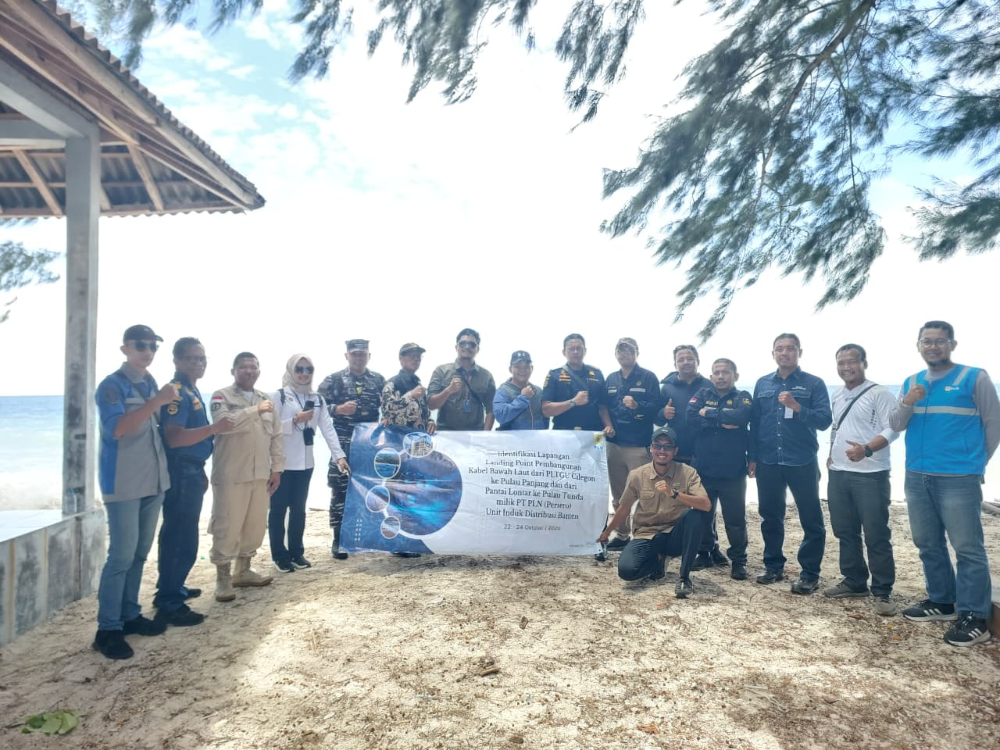
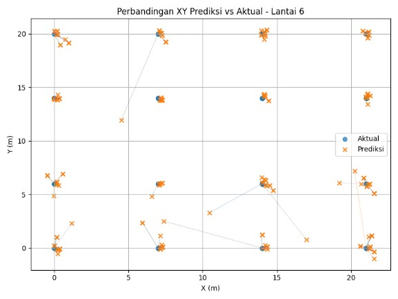
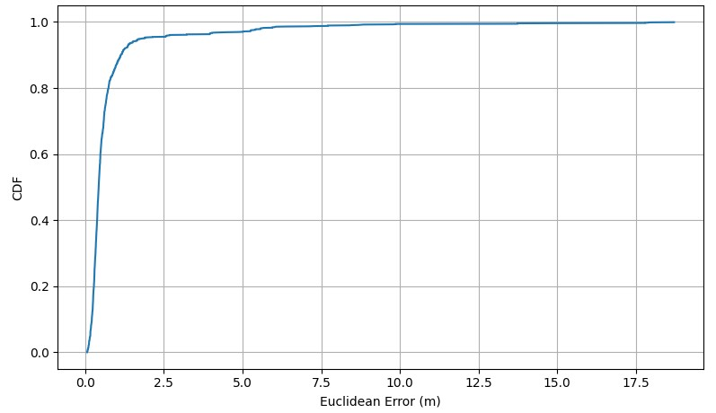
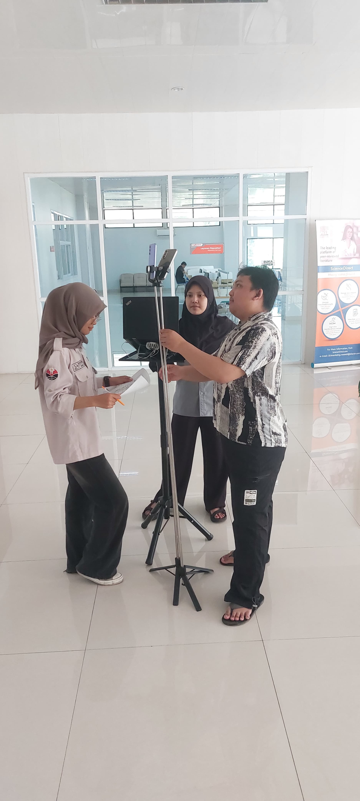
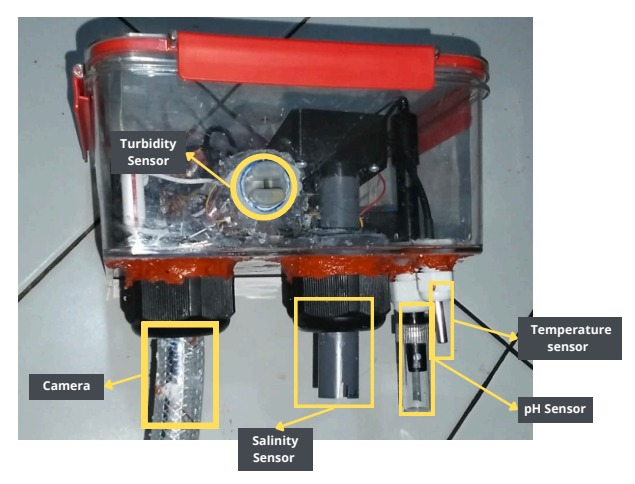
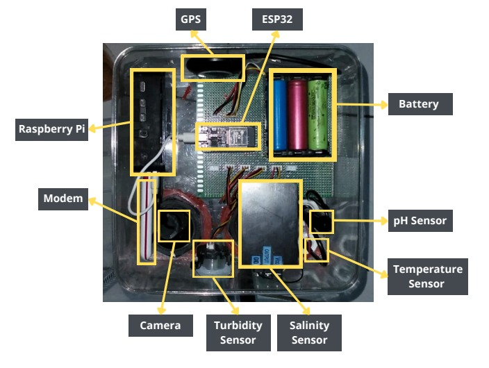
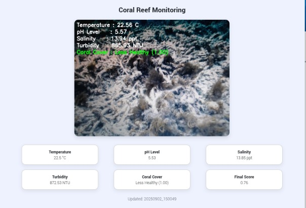

Electrical Engineering Graduate | IoT | Machine Learning | Telecommunications
Lulusan Teknik Elektro (Telekomunikasi) dengan pengalaman R&D pada sistem IoT dan machine learning. Berfokus pada integrasi ESP32/Raspberry Pi, Wi-Fi Fingerprinting, dan estimasi posisi indoor berbasis MLP.
Lihat Proyek Hubungi SayaTentang Saya
Saya adalah lulusan Teknik Elektro (Telekomunikasi) dari Universitas Pendidikan Indonesia dengan IPK 3,67/4,00. Saya memiliki pengalaman riset dan pengembangan pada sistem IoT dan machine learning, termasuk integrasi ESP32/Raspberry Pi dengan berbagai sensor dan kamera. Penelitian skripsi saya berfokus pada estimasi posisi indoor berbasis Wi-Fi Fingerprinting dan MLP dengan hasil Mean Euclidean Error 0,77 meter dan Floor Accuracy 99,46%. Saya terbiasa melakukan pengujian prototipe, survei lapangan, dan penyusunan laporan teknis.
Technical & Soft Skills
ESP32, Raspberry Pi, Arduino IDE, W5500, Sensor Integration
Python, SQL, Pandas, NumPy, Scikit-learn, Matplotlib, Excel, MATLAB
MLP, CNN, Data Preprocessing, Model Evaluation (MSE, MAE, MEE)
Wi-Fi Fingerprinting, RSSI Analysis, LAN / Ethernet
Analytical Thinking, Problem Solving, Teamwork, Communication, Adaptability
Research & Development

Portofolio Penelitian
Mengumpulkan data RSSI Wi-Fi pada beberapa titik referensi, melakukan preprocessing, pelabelan, normalisasi, dan analisis dataset dengan Python. Membangun model MLP untuk memprediksi koordinat posisi perangkat.


Memperluas estimasi lokasi menjadi posisi 3D (X, Y, Z) dengan dataset multi-perangkat, multi-gedung, dan multi-lantai. Menganalisis pengaruh multipath, shadowing, dan obstruction terhadap karakteristik RSSI.

Mengembangkan perangkat keras, sensor, dan sistem akuisisi data untuk pemantauan ekosistem terumbu karang berbasis citra digital dan IoT. Diuji agar pengambilan data sesuai kebutuhan penelitian.



Riwayat Akademik
September 2022 – Juni 2026 | IPK 3,67 / 4,00
Mata kuliah relevan:
Pengembangan Diri
MarkPlus ASEAN — 2025
Balai Bahasa UPI — 2026